PROFINET IO 通信不支持跨网段的实时通信，此外两个 PROFINET IO 控制器如果在其中没有智能设备情况下通常也无法直接进行 PROFINET IO 通信。此时，可以使用 PN/PN Coupler 来解决这些问题。
PN/PN Coupler 具有两个 PROFINET 接口，每个接口连接至不同子网。两个子网彼此电气隔离。在两个子网中 PN/PN Coupler 作为两个 IO 设备分别与不同的 IO 控制器通信，两个 IO 设备之间的数据交换就实现了不同 IO 控制器之间的通信。
本文档要实现的任务是：S7-1200 和 S7-1500 均作为 PROFINET IO 控制器，并且两个控制器的 IP 地址不在同一网段，实现两个 CPU 之间的 PROFINET IO 通信。 S7-1200 输出 10 个字节给 S7-1500；S7-1500 输出 5 个字节给 S7-1200。
具体网络结构及通信角色如图 1 所示，参数分配如表 1 所示：
图 1. 网络结构及通信角色
表1.
| 硬件 | 通信角色 | IP地址 | 数据交换 |
| S7-1200 | IO 控制器 | 192.168.0.124 | 输出 10 个字节数据；输入 5 个字节数据 |
| S7-1500 | IO 控制器 | 192.168.2.155 | 输入 10 个字节数据；输出 5 个字节数据 |
| PN/PN Coupler X1 接口 | S7-1200 的 IO 设备 | 192.168.0.158 | 与 S7-1200 交互数据，并转给 PN/PN Coupler X2 接口 |
| PN/PN Coupler X2 接口 | S7-1500 的 IO 设备 | 192.168.2.158 | 与 S7-1500 交互数据，并转给 PN/PN Coupler X1 接口 |
要实现该通信，可以有 3 种方法：
1. S7-1200 和 S7-1500 在同一 TIA Portal 项目中：从硬件目录中添加 PN/PN Coupler 组态
2. S7-1200 和 S7-1500 不在同一 TIA Portal 项目中：一方从硬件目录中添加 PN/PN Coupler 组态，导出 GSD 文件给另一方组态
3. S7-1200 和 S7-1500 不在同一 TIA Portal 项目中：双方都使用从官网下载的 PN/PN Coupler 的 GSD 文件组态
本文档介绍第 2 种方法。
博途软件： TIA Portal STEP7 Professional V18（导出 GSD 的项目软件版本需要至少 TIA Portal V15 才可以）
硬件如表 2 所示：
表 2.
| 名称 | 订货号 | 固件版本 |
| CPU 1214C DC/DC/DC | 6ES7214-1AG40-0XB0 | V4.6 |
| CPU 1515-2 PN | 6ES7515-2AM01-0AB0 | V2.9 |
| PN/PN Coupler | 6ES7158-3AD10-0XA0 | V4.2 |
1. 新建一个项目，添加 CPU 1214 DC/DC/DC V4.6，名称设置为 IOController1200，如图 2 所示。
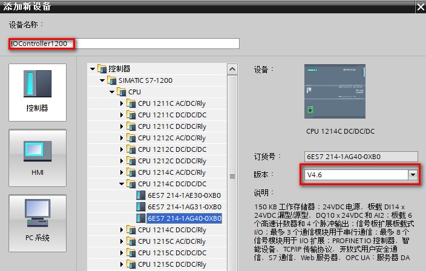
图 2. 添加 S7-1200CPU
2. 在弹出的 S7-1200 安全设置对话框中设置，禁用保护 PLC 机密的 PLC 数据；取消勾选仅支持 PG/PC 和 HMI 的安全通信；将 PLC 访问保护设置为完全访问权限；最终设置结果如图 3 所示。
注意： PLC 安全设置可以根据实际需要进行设置！
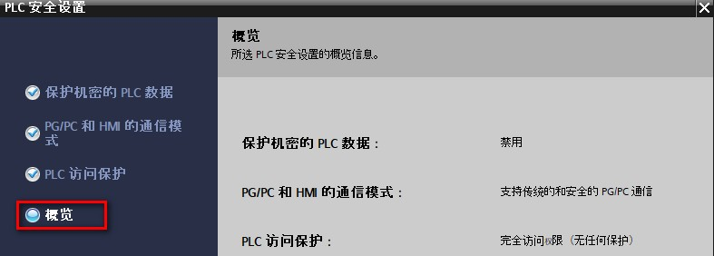
图 3. 安全设置概览
3. S7-1200 以太网地址设置为 192.168.0.124，如图 4 所示。
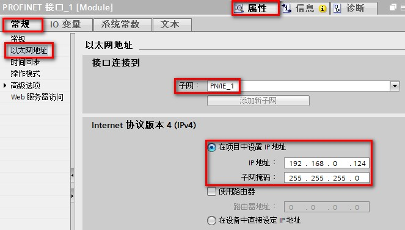
图 4. 设置 S7-1200 以太网地址
4. 在网络视图 > 硬件目录 > 网络组件 > 网关 > PN/PN Coupler > 6ES7 158-3AD10-0XA0，双击或者拖拽到网络视图中，如图 5 所示。

图 5. 硬件目录中添加 PN/PN Coupler
5. 在 PN/PN Coupler 的设备视图，选中 X1 接口，在属性 > 常规> 以太网地址属性中设置 IP 地址为 192.168.0.158； 取消勾选自动生成 PROFINET 设备名称，设置设备名称为 pnpncpuplerx1，如图 6 所示。
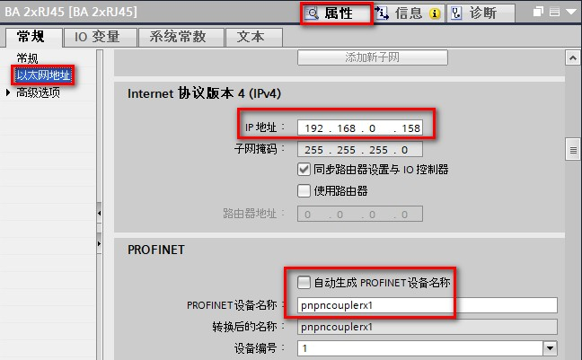
图 6. 设置 PN/PN Coupler X1 接口 IP 地址
6. 在网络视图中，点击网络，鼠标选中 PN/PN Coupler X1 接口，点击未分配三个字，在出现的下拉菜单中选择 IO 控制器，选择 IOController1200.PROFINET接口_1 作为 IO 控制器，如图 7 所示。
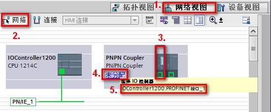
图 7. 为 PN/PN Coupler X1 接口分配 IO 控制器
7. 在 PN/PN Coupler 的设备视图，点击 X1 侧模块，属性 > 常规 > 模块参数 > 转换映射中，即可添加传输区，如图 8 所示。
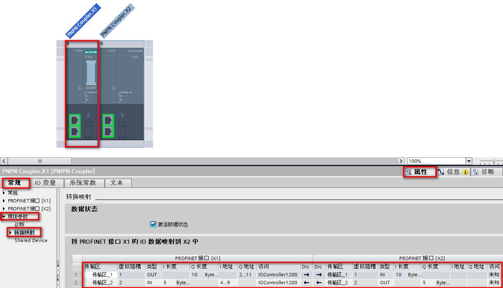
图 8. 添加传输区
从图 8 中，整体看：
可以分为 PN/PN Coupler PROFINET 接口 X1 部分和 PN/PN Coupler PROFINET 接口 X2 部分； PROFINET 接口 X1 的 IO 控制器是 IOController1200 ；由于 X2 部分组态在另外一个项目中，所以此处显示 X2 部分的 IO 控制器是未知，也无具体的 IQ 地址
横向看：
传输区_1 实现的是 S7-1200 输出 10 个字节 QB2 - QB11
传输区_2 实现的是 S7-1200 输入 5 个字节 QB4 - QB9， 由于激活了数据状态，所以多出 1 个字节
8. 添加传输区后，在传输区的下方，点击导出按钮， 勾选导出 X2 （右耦合端），选择 GSD 文件导出的存储路径，点击导出按钮完成 GSD 文件的导出，如图 9 所示。
注意： 导出的 GSD 文件用于另外一个项目中对 PN/PN Coupler 的组态
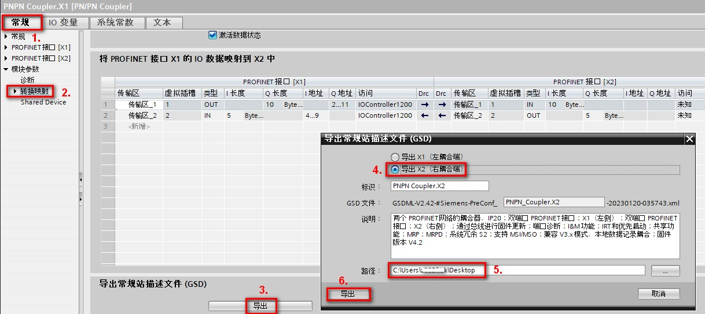
图 9. 导出 GSD 文件
9. 将 S7-1200 程序分别做软件和硬件的编译，下载至 CPU 中。
10. 对 PN/PN Coupler 的 X1 接口进行设备名称的分配
网络视图中，鼠标右键选中 X1 侧模块， 弹出的下拉菜单中选择分配设备名称，如图 10 所示。
弹出的“分配 PROFINET 设备名称”对话框中，点击“更新列表”搜索所连接的 IO 设备，如果设备名称“ 状态” 列显示 “未分配设备名称” 或者 “设备名称不同”，点击分配设备名称，即可分配设备名称，如图 11 所示。
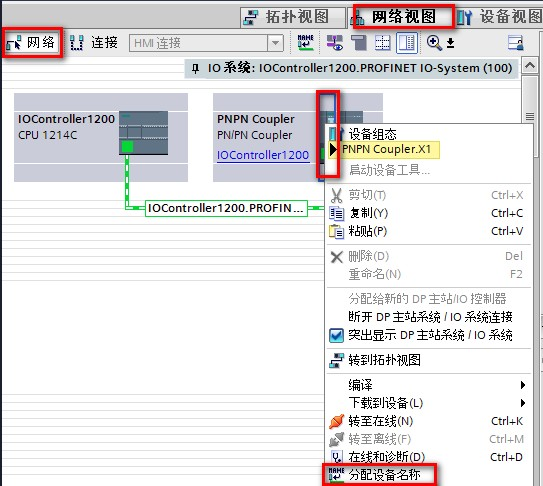
图10. 选择分配设备名称

图 11. 更新列表并分配设备名称
1. 创建另外一个新项目，添加 CPU1515-2PN V2.9 ，名称设置为 IOController1500，如图 12 所示。

图 12. 添加 S7-1500 CPU
2. 在弹出的 S7-1500 安全设置对话框中设置，禁用保护 PLC 机密的 PLC 数据；取消勾选仅支持 PG/PC 和 HMI 的安全通信； 将 PLC 访问保护设置为完全访问权限；最终设置结果如图 13 所示。
注意： PLC 安全设置可以根据实际需要进行设置！

图 13. S7-1500 安全设置
3. S7-1500 以太网地址设置为 192.168.2.155，如图 14 所示。

图 14. S7-1500 以太网地址设置
4. 点击菜单栏选项按钮，点击“管理通用站描述文件”，弹出的对话框中点击已安装的 GSD，在源路径中选择刚才导出 GSD 文件存储的正确路径，勾选待安装的 GSD 文件复选框，点击安装按钮进行安装，安装完成后等待更新硬件目录，更新完成后就可以在硬件目录中找到该 GSD 文件了。如图 15 所示。
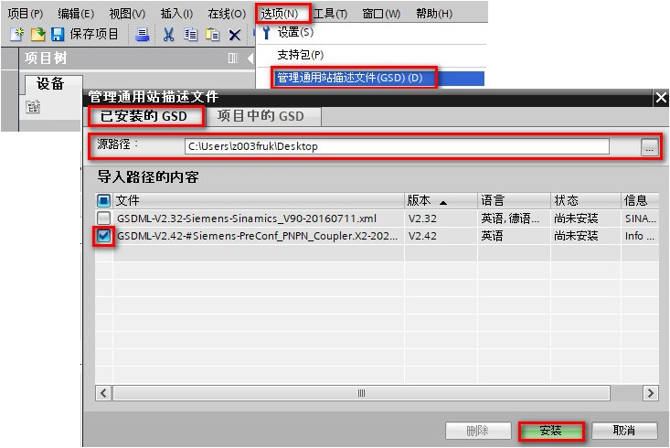
图 15. 导入 GSD 文件
5. 在网络视图中添加 PN/PN Coupler ，查找模块按照右侧路径：硬件目录 > 其他现场设备 > PROFINET IO > Gateway > SIEMENS AG > PN/PN Coupler > PN/PN Coupler.X2 ，如图 16 所示。
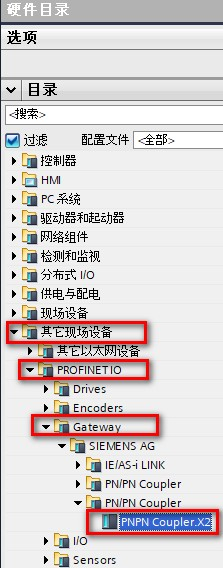
图 16. 添加 PN/PN Coupler 模块
6. 网络视图中，点击网络，点击 PN/PN Coupler GSD 文件左下角未分配，选择 IOController1500.PROFINET 接口_1 为其 IO 控制器，如图 17 所示。
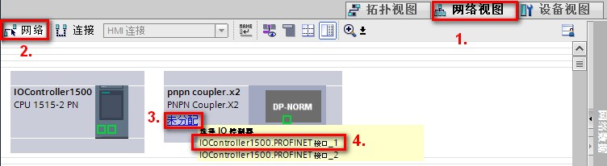
图 17. 为 PN/PN Coupler.X2 分配控制器
7. 在 PN/PN Coupler 的设备视图，选中 X2 接口，在属性 > 常规 > 以太网地址属性中设置 IP 地址为 192.168.2.158； 取消勾选自动生成 PROFINET 设备名称，设置设备名称为 pnpncpuplerx2，如图 18 所示。
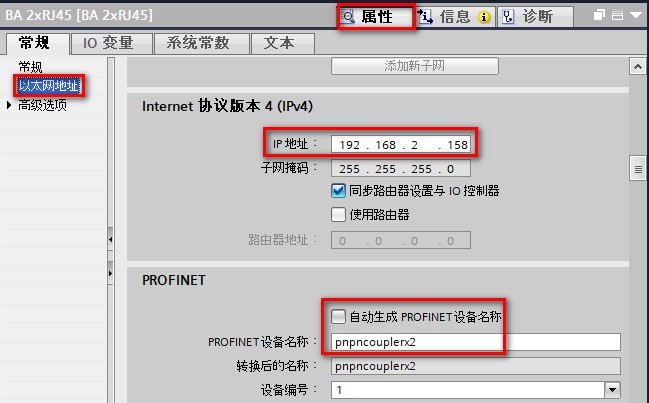
图 18. 设置 PN/PN Coupler X2 接口 IP 地址
8. 双击 PN/PN Coupler X2 GSD 文件进入其设备视图，在设备视图的设备概览中可以查看到传输区，可以根据需要调整输入输出区的起始地址，如图 19 所示
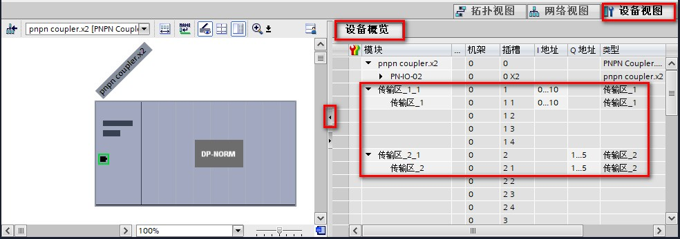
图 19. 查看调整传输区 IQ 地址
9. S7-1500 项目硬件和软件分别编译，将程序下载至 CPU 中。
10. 为 PN/PN Coupler.X2 分配设备名称，可以参考 PN/PN Coupler.X1 的方法。
1. 为 PN/PN Coupler 供电：
如对两个连接 (PS1 / PS2) 施加电压，则 PN/PN Coupler 自动使用 PS1 的电压源。一个电压源发生故障，则 PN/PN Coupler 自动切换到另一个电压源。
如仅将 PN/PN Coupler 连接到一个电源，则最好将其连接到 PS1。
2. 在 S7-1200 和 S7-1500 分别创建监控表，添加对应变量，S7-1200 输出的 10 个字节数据值分别修改为 1 ~ 10， S7-1500 输出的 5 个字节数值分别是 21 ~ 25， 修改数值后监视对侧接收数据正常，如图 20 所示。
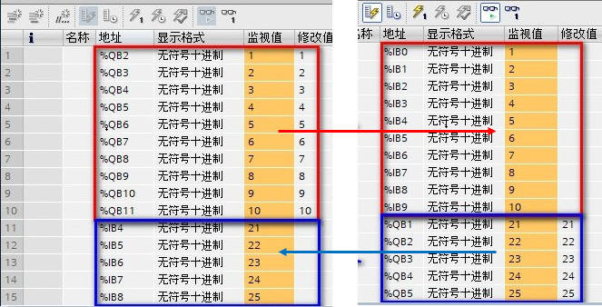
图 20. 监控表监视数据交换